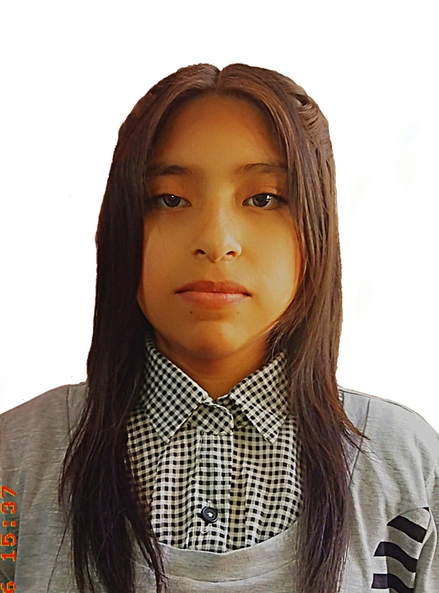

Sucre, Provincia Oropeza - Bolivia
Ricardo Andrade N°215
73400404
Español
Inglés: básico
Reconocimiento por participación en la banda escolar.
Ingreso libre a la universidad por concurso "Olimpiadas del Saber".
Título de Bachillerato.
Unidad Educativa Benjamín Guzmán
Unidad Educativa María Josefa Mujía
Nancy Betty García Calle
Desde que era más pequeña siempre observé con admiración el esfuerzo y la dedicación de mi hermana en su carrera. Verla estudiar, prepararse y hablar con tanta pasión sobre lo que aprendía despertó en mí una curiosidad que poco a poco se fue transformando en un verdadero interés. Al principio solo era admiración, pero con el tiempo comprendí que yo también quería sentir esa emoción de superación y crecimiento personal que ella demostraba cada día.
Elegir esta carrera no fue una decisión tomada de un momento a otro, sino el resultado de reflexionar sobre mis metas y mis sueños. Me di cuenta de que quiero construir un futuro estable, pero no solamente por lo económico, sino también por la satisfacción de lograr algo por mí misma. Quiero demostrarme que soy capaz de enfrentar retos, de aprender cosas nuevas y de salir adelante incluso cuando el camino se torne difícil.
Mi motivación principal es superarme, crecer como persona y como profesional. Deseo adquirir conocimientos que me permitan aportar algo positivo a la sociedad y sentir orgullo de lo que hago. También quiero ser un ejemplo para mi familia, así como mi hermana lo fue para mí, demostrando que con esfuerzo y constancia se pueden alcanzar metas importantes.
Estudiar esta carrera significa para mí una oportunidad de cambio, de evolución y de construir el futuro que deseo. No se trata solo de obtener un título, sino de aprender, madurar y prepararme para la vida. Sé que habrá dificultades, pero tengo la determinación de seguir adelante y dar lo mejor de mí en cada etapa de este proceso.
Además, cada día que avanzo en mis estudios confirmo que tomé una decisión importante para mi vida. Aunque existan momentos de duda o cansancio, recuerdo las razones que me impulsaron a comenzar y eso me da fuerzas para continuar. Aspiro a convertirme en una profesional capaz, responsable y comprometida con lo que hace.
Para mí, esta carrera no es solo una meta académica, sino un proyecto de vida. Representa el deseo de crecer, de demostrar que puedo alcanzar mis sueños y de construir un futuro lleno de oportunidades. Estoy dispuesta a seguir aprendiendo, esforzándome y dando lo mejor de mí en cada paso que dé.